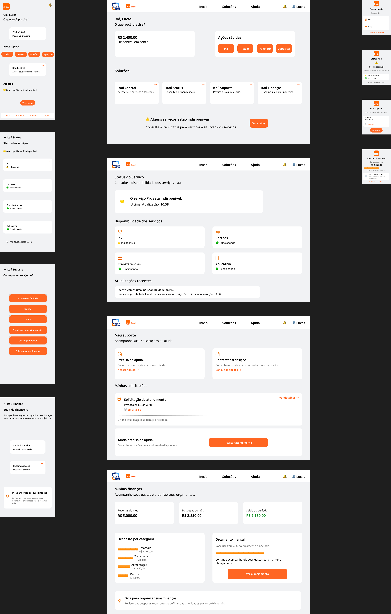
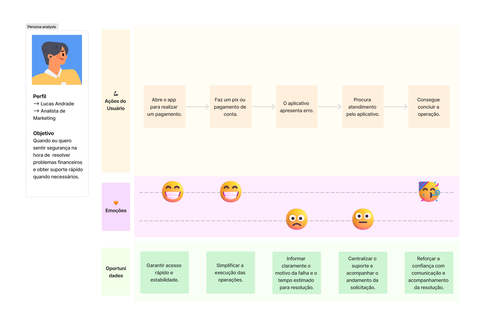
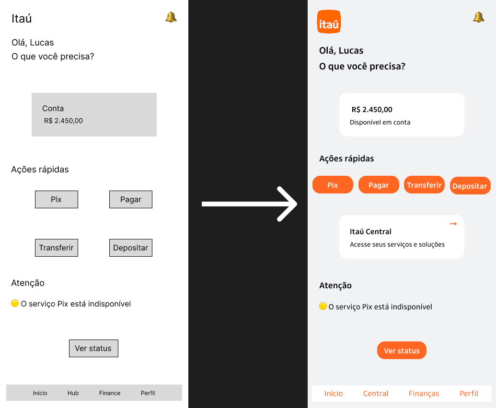
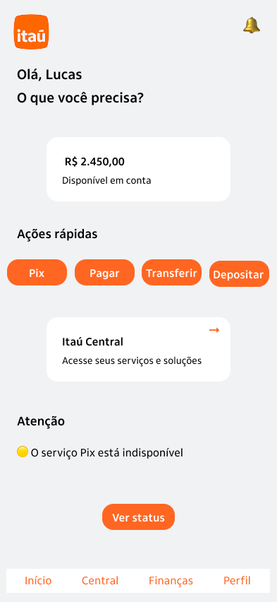
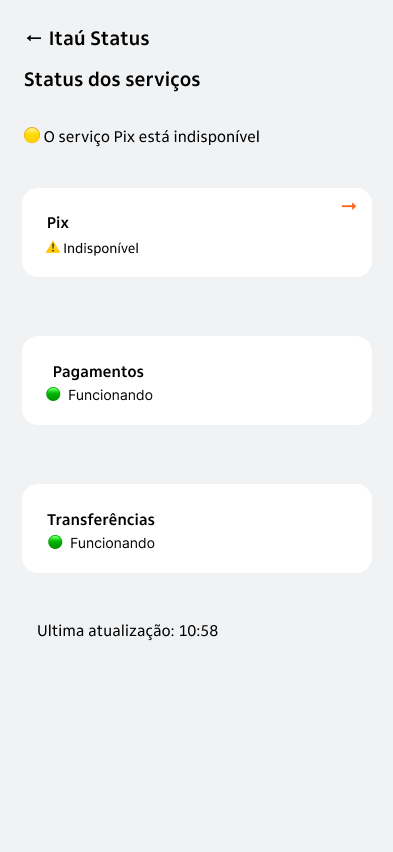
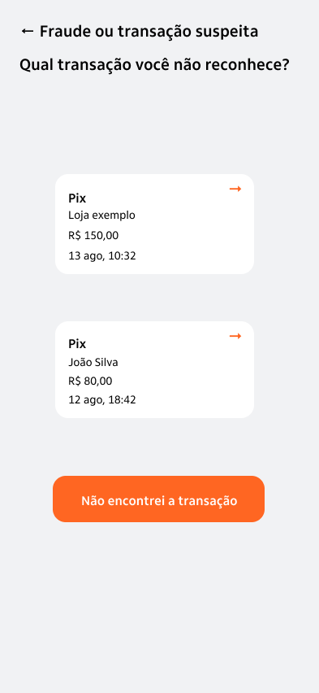
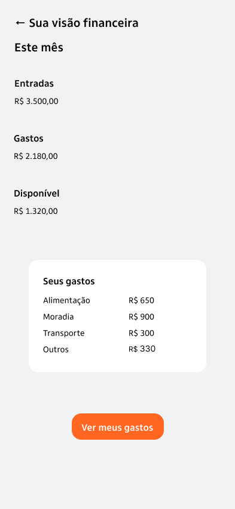
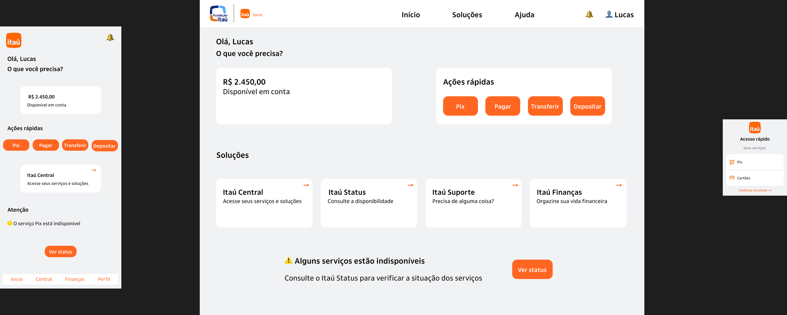

Itaú Central
Ponto de acesso às soluções do ecossistema, facilitando a localização dos serviços disponíveis.
Uma proposta de experiência financeira mais integrada, clara e consistente em diferentes dispositivos.
Desenvolvimento de um ecossistema digital composto por quatro soluções complementares, com foco na organização de serviços financeiros, na facilidade de navegação e na continuidade da experiência entre canais.

Os serviços bancários digitais fazem parte da rotina de diferentes perfis de usuários, que precisam consultar informações, acompanhar serviços, solicitar atendimento e organizar suas finanças.
Entretanto, a distribuição dessas funcionalidades em diferentes áreas pode tornar a navegação menos clara e dificultar a localização de informações importantes.
A partir desse cenário, o projeto explorou a criação de um ecossistema digital para o Itaú, reunindo soluções complementares em uma experiência visualmente consistente.
Como organizar diferentes serviços financeiros em uma experiência digital integrada, intuitiva e consistente para usuários com necessidades e contextos de uso distintos?
O desafio envolveu não apenas a organização das funcionalidades, mas também a clareza da navegação, a compreensão das soluções e a adaptação das interfaces para diferentes dispositivos.
Desenvolver uma proposta de ecossistema digital que facilite o acesso a serviços bancários e financeiros, mantendo uma identidade visual compartilhada e uma experiência coerente entre canais.
A etapa inicial envolveu uma pesquisa exploratória a partir de avaliações de aplicativos, reclamações públicas, comentários em redes sociais e tendências do mercado financeiro digital.
Essas informações ajudaram a compreender dificuldades recorrentes relacionadas à navegação, ao atendimento, à disponibilidade dos serviços e à organização financeira.
Também foram desenvolvidos artefatos de UX, como personas, mapa de empatia e jornada do usuário, para orientar a definição das soluções propostas.

A proposta foi organizada em quatro soluções com finalidades distintas, mas conectadas por uma mesma identidade visual e estrutura de navegação.
Ponto de acesso às soluções do ecossistema, facilitando a localização dos serviços disponíveis.
Consulta de informações sobre a disponibilidade e o funcionamento dos serviços digitais.
Acesso a opções de ajuda e acompanhamento de solicitações de atendimento.
Visualização e organização de informações financeiras, despesas e orçamento.
A partir das informações levantadas, foram desenvolvidas propostas de interface e protótipos no Figma.
O processo envolveu a organização das funcionalidades, a definição de componentes visuais e a construção de fluxos para representar a interação com as soluções.
Os protótipos foram utilizados posteriormente em testes de usabilidade, permitindo identificar pontos de melhoria antes do refinamento final.
Foram realizados testes qualitativos exploratórios com dois participantes de faixas etárias diferentes, utilizando protótipos interativos desenvolvidos no Figma.
O objetivo foi observar como os participantes compreendiam as soluções, localizavam funcionalidades e navegavam pelas interfaces.
Os testes tiveram caráter exploratório. As observações orientaram decisões de design, sem representar uma validação quantitativa da solução.
Os feedbacks recebidos durante os testes foram utilizados para orientar o refinamento das interfaces.

Após as etapas de pesquisa, prototipação e testes, as interfaces foram refinadas para fortalecer a clareza das informações e a consistência visual.
Reúne os acessos às soluções do ecossistema em uma estrutura organizada.

Apresenta informações sobre a disponibilidade dos serviços digitais.

Organiza o acesso à ajuda e ao acompanhamento de solicitações.

Apresenta informações financeiras de maneira organizada, facilitando a visualização de despesas e orçamento.

O projeto também explorou a adaptação das quatro soluções para diferentes dispositivos, considerando as particularidades de cada contexto de uso.
Foram desenvolvidas 12 telas responsivas, contemplando versões para dispositivos móveis, desktop e smartwatch.
O objetivo foi preservar a identidade visual do ecossistema, adaptando a organização dos conteúdos, os componentes e a navegação às características de cada dispositivo.

O projeto resultou em uma proposta de ecossistema digital composto por quatro soluções integradas e adaptadas a diferentes dispositivos.
Os testes de usabilidade contribuíram para identificar dificuldades de navegação e compreensão, orientando alterações nas interfaces antes da apresentação final.
Entre os principais aprendizados, destacou-se a importância de testar a compreensão das funcionalidades, revisar decisões de navegação e manter consistência visual sem ignorar as necessidades específicas de cada dispositivo.
Mais do que desenvolver interfaces, este projeto permitiu explorar como pesquisa, testes e refinamento visual podem contribuir para decisões de design mais fundamentadas.